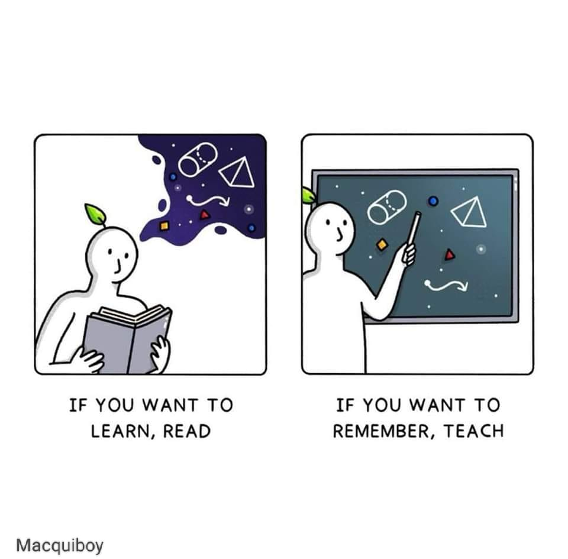

Enjoy Reading?
Feel free to follow or reach out to me on Twitter
Studying effectively is essential for achieving academic success without unnecessary stress. By using proven techniques, you can make the most of your study time and enhance your learning. Here are some powerful study strategies, simplified into the acronym S-T-U-D-Y.
S - Spaced Repetition
Boost your memory without extra study time!
•Use short study sessions: Study for 15 minutes
each day to keep your mind fresh and focused.
•Spread sessions out: Avoid cramming by
spreading your study sessions over time. This method helps reinforce your
memory and understanding of the material.
T - Teach What You Learn
Understand better with the Feynman Technique!
•Explain concepts: Pretend you’re teaching the
material to someone else. This forces you to simplify and clarify your understanding.
•Deepen your understanding: By teaching, you
identify gaps in your knowledge and solidify what you’ve learned.

U - Use Interleaving
Enhance learning by mixing study sessions!
•Mix subjects: Study different subjects or tasks
in one session. This variety keeps your brain engaged and helps you make connections between different concepts.
•Stay engaged: Interleaving makes studying more
interesting and prevents monotony.
D - Dual Encoding
Improve focus and memory with combined learning methods!
•Create mind maps: Visual aids like mind maps
can help you organize information and see the relationships between concepts.
•Watch videos: Combining visual and written
information engages multiple sensory pathways, making it easier to remember and understand.
Y - Yoking
Make learning fun by linking it to real-life situations!
•Connect to everyday experiences: Relate your
study material to real-life examples. This makes learning more meaningful and helps you remember information
better.
•Make it enjoyable: Finding practical
applications for what you’re learning can make studying feel less like a chore and more like an interesting
activity.
By incorporating these techniques into your study routine, you can make your study time more efficient and effective. Spaced repetition, teaching what you learn, interleaving different subjects, using dual encoding methods, and yoking study material to real-life situations are all powerful strategies to enhance your learning. Remember, it’s not just about studying harder, but studying smarter.
- Happy studying!